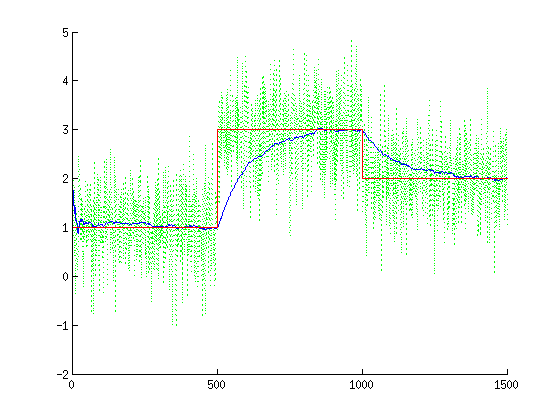

Procedure Kalman(N)
clear all;
close all;
N = 3 * 500;
P(1:N, 1:N) = 0.0;
X(1:N, 1:N) = 0.0;
K(1:N) = 0.0;
C = 1;
s = 0.7;
W(1:N) = C;
W(N/3+1: 2*N/3) = 3;
W(2*N/3+1: N) = 2;
Z = W + s * randn(1,N);
Q = 1e-4;
R = 1;
A = C * ones(1, N);
P(1, 1) = 1 + Q;
X(1, 1) = C + s * randn();
t = 1;
while t < N
X(t+1, t) = X(t, t);
P(t+1, t) = P(t, t) + Q;
t = t + 1;
K(t) = P(t, t-1) / (R + P(t,t-1));
X(t, t) = X(t, t-1) + K(t) * (Z(t) - X(t, t-1));
P(t, t) = P(t, t-1) - K(t) * P(t, t-1);
end
Y(1:N-2) = 0;
for i=1:N
Y(i) = X(i, i);
end
figure(1);
clf;
hold on;
plot(1:N, Z, 'g:');
plot(1:N, Y, 'b');
plot(1:N, W, 'r');
